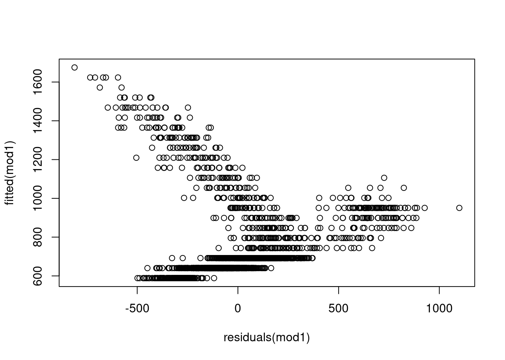
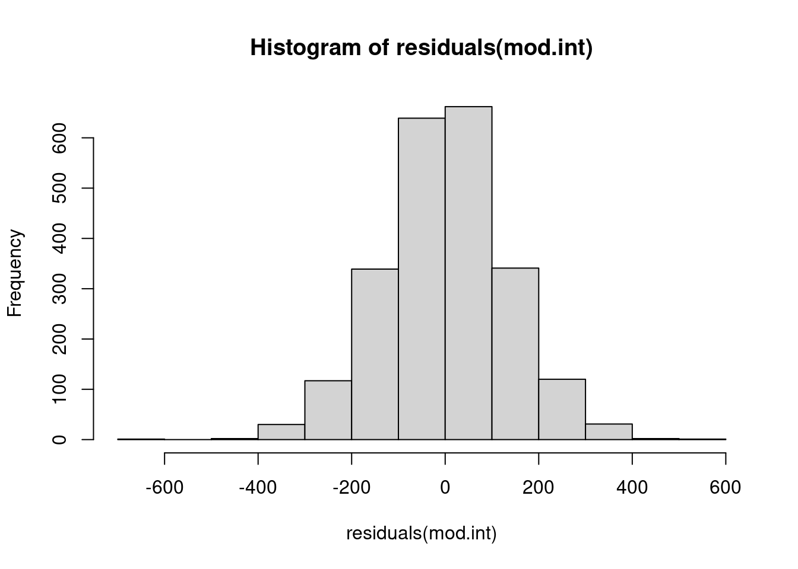
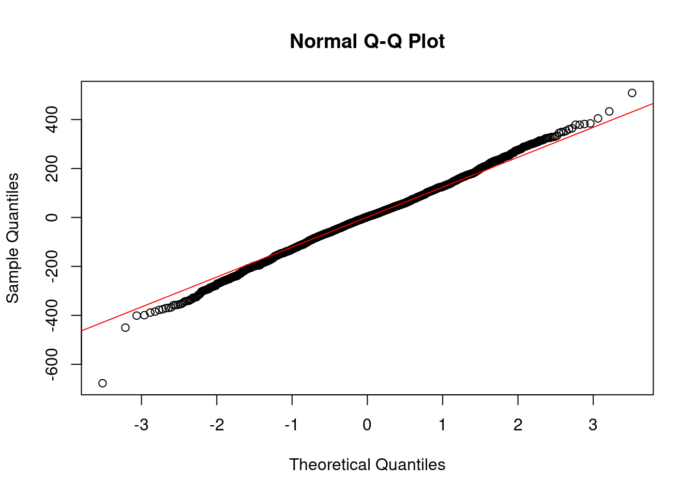

Just because we can fit a model, doesn’t necessarily mean it is a good model. How do we know if a model is a ‘good’ model? We could approach this in a whole lot of different ways.
10.1 Assumptions of linear models
First, does our model meet the assumptions of a linear model? If it doesn’t, it might not be a good model. But, how much are we willing to compromise on those assumptions to have any model at all? Remember that all models are going to be wrong and are imperfect representations of the world with a lot of simplifications, but the question is really whether or not we have cut too many corners. Earlier this semester, we played rectilinear pictionary where we were allowed to draw straight lines. What if instead we had played pointilism pictionary? How many guesses would it have taken people to figure out their animals if you were only allowed to draw one point per turn? Is that an assumption we would have been willing to accept was okay? What if, actually, one team had been allowed to draw curved lines while everyone else had to draw straight lines? Is that a rule we would have been okay with breaking? These sorts of questions, as ridiculous as they may seem, are the sort of things you want to consider when evaluating model fit. There is no right or wrong answer (okay, sometimes there are really, really bad models that would count as wrong answers…) but most of the time if you’re fitting a model, it will be somewhere in a grey zone of goodness.
10.1.1 The model makes biological sense
Remember that this is the single most important thing to keep in mind when fitting a model. If your model does not make biological sense, then you should not be fitting it, or quite frankly evaluating fit. It should still be in your mental checklist though, because it is very, very important to remind ourselves of this criterion! It can be tempting to consider a few different models, compare them by other metrics of ‘goodness’ and end up selecting a model that by and large is utter nonsense when you consider the biology or ecology of a system.
We used the sum of the squared residuals earlier when thinking about how to fit the best line through the data in an OLS sense. Let’s use that as a simplistic measure of ‘goodness’ for the two different models below. Remember that when using this as our metric, we want a smaller sum because that means the predicted and observed values are closer together. Let’s fit the model from above, with the square root of age and an interaction between sex and age, and a second model that also includes the day during the month we recorded them and an interaction term with sex. Is there any reason you can think of why, on later days in a 30-day calendar month, there should be some reason that individuals weigh more, and that this effect should be more pronounced (or less pronounced) for male than female bison? Do they perhaps get fed more at the beginning of the month because there was a new food shipment, and then later in the month males are more pushy so they continue to eat the dwindling food supply while females don’t get as much? Do they have monthly check-ins with a vet and are trying to watch their weight towards the end of the month? Is the grass mowed at the start of each calendar month so there is less food available and it is tied to a 12-month calendar? And for some reason this affects one sex more than the other? Most of these explanations seem pretty far-fetched, so even though the SSR is smaller for the model that includes this odd interaction term, it doesn’t really make biological sense, which means it is probably not as good of a model as our much more interpretable one. Sure, there could be better models than our original one that are also biologically interpretable, but the one I’ve proposed likely isn’t one.
dat <-read.csv("https://tinyurl.com/bigbison")head(dat)
# calculate agedat$age <- dat$RecYear - dat$AnimalYOB +1# sort with oldest bison at the topdat <- dat[order(dat$age, decreasing = T),]# remove duplicates of the same individualdat <- dat[!duplicated(dat$AnimalCode),]dat$weight <-as.numeric(dat$AnimalWeight)
Warning: NAs introduced by coercion
dat <- dat[!is.na(dat$AnimalWeight),]dat$sex <-factor(dat$AnimalSex)dat$squage <-sqrt(dat$age)plot(dat$weight ~ dat$age, col=dat$sex)
Most of the time, the way you have conceptualized your model will mean you are meeting this assumption. A lot of the times in ecology when we have to deal with non-additive effects, we will have already done this through some sort of data transformation (e.g., things like exponentiation or logarithms) and still fit things in an additive manner. But, sometimes you really just need a model that just fits the data with a somewhat uninterpretable effect (i.e., nothing like a slope that we are used to seeing). For example, maybe you’ve got an effect that you think only kicks in at some point. We talked about drowning baby birds very early in the semester, and the potential for them to exhibit some either adaptive or plastic responses to sea level rise by having chicks climb to the top of nests to survive high tide. If, as has been hypothesized, they cannot actually climb until their bones are fully ossified, this effect may not kick in until say day six or seven. What we are dealing with in that case would be a step function or a hurdle model, where the predictor variable has to exceed some threshold before it has an effect. We could force this into a linear context, but it isn’t immediately clear how ‘additive’ it is (…but you can force most models to conform if you want to, hence however you conceptualize it is typically linear). Similarly, things like splines or local regression will fit different models to different portions of the data, so aren’t really additive in the broad sense but are within smaller areas, so we can kind of force most things to be additive. If you’re interested in this general question of modeling things without additive, linear effects, you should probably venture into GAM (Generalized Additive Model) world, which is something we won’t talk about in this course. Think of them sort of like just chucking all your data in a hat and seeing what comes out. As perhaps a more relatable example, ask any ‘AI’ model how it knows a picture of a cat is a cat, and it would probably tell you something like “it’s, y’know, kinda cat-like” and wave its hands a bit. A lot of ML models are sorta in this realm, and then people will fit post-hoc GAMs to be able to explain how the model eventually got to its conclusion. To be clear: GAMs are still additive, but they are kinda in the realm of “…yeah, but does my model really have to meet all those assumptions?”
10.1.3 Effects are linear
Same general comment as above: if you have conceptualized your model as having linear, additive effects, there is a pretty good chance you’re good to go with modeling your data as if it has linear, additive effects.
10.1.4 Errors are independent
When we talk about errors in this context, we are referring to the residuals of the model (not things like process or observational error). Remember that our ‘errors’ (or residuals) are the differences between the predicted and observed values. Let’s think about some reasons these errors might not be independent. Typically, in ecology this arises from either some sort of hierarchical grouping structure or an unmeasured covariate that would explain why we have ‘groups’ showing up in our errors. For example, what if for some reason we fit our bison model without including sex as a covariate?
errors <-residuals(lm(weight ~ age, data = dat))hist(errors, 100)
# looks like those big errors are maybe due to some grouping...
We aren’t going to talk about non-independent errors right now, because we will spend a lot of time on these later in the semester when we get to mixed effects models and hierarchical models. For now, remember that you should think about potential covariate that might explain structure in your errors!
10.1.5 Errors have equal variance (homoscedasticity)
What we mean by homoscedasticity is that the spread in the errors is the same across all different values or levels of the predicted value. So if the errors were homoscedastic, they should basically just be a big blob with no trend line across the line of best fit. What would be especially bad here is a trend line, fan shape, or really anything you could draw a discernible shape around. Fish-shaped = bad. Pufferfish-shaped = probably good. If we see variance in the errors showing a pattern over predicted values, we are probably missing a covariate that might explain that trend, or there is something really bad about our overall fit. For example, if we have a fairly flat relationship between predicted values and errors at small values, but a large error at larger values, that might mean our model is just pretty bad at capturing the range of values in our data. If there is a strong trend, maybe we’ve got a missing covariate (or several!). What would indicate that this is probably not a big problem is just having a nice, fluff cloud of residuals with no clear patterns.
mod1 <-lm(weight ~ age, data = dat)plot(fitted(mod1) ~residuals(mod1))

10.1.6 Errors are normally distributed
While a straight-up linear model is not often done in ecology (our data typically don’t meet the assumptions - we will get to this soon in the course!), I would guess that this is most likely either the most, or second most, common issue with models. It is either this, or the assumption about independent errors, that are violated most often and lead us to other types of models. So, let’s take a look at our errors. We will go back to the most sensible model we have fit so far for this check. This plot doesn’t look too bad. We’ve got a lot of data, and we do expect our weight response variable to be normally distributed, which often (but not always!) means the errors are also often normally distributed.
mod.int <-lm(weight ~ squage*sex, data = dat)hist(residuals(mod.int))

qqnorm(residuals(mod.int)) # residual quantiles qqline(residuals(mod.int), col="red") # theoretical quantiles for normal

10.2 Diagnostic plots in R
By default, R has some diagnostic plots for visually inspecting the goodness of our models to our data, mostly based on residuals and assumptions of linear models. To view them, you can call plot() on your model.
First is the residuals vs fitted plot. The residuals vs fitted plot helps us check if our errors vary with magnitude, i.e. do we have larger errors for larger predicted values? If we see a trend here, that means our model may only be good over some ranges of values. If this relationship is relatively flat, that means we should not be concerned about the model estimates being biased at a certain range of our observed data.
Next is the Normal Q-Q plot. Remember that one of the assumptions of linear models is that the error are normally distributed. If the errors are normally distributed, they should fall along the line matching up with theoretical quantiles. This is just a visual check, so it is not really diagnostic, but can give us a good gut check on whether or nor the errors are normally distributed. There seems to be a fairly long tail in the lower end that deviates from the assumption, which we might have anticipated from our histogram of the response variable.
The third default diagnostic plot is Scale-Location, which helps us understand if our errors have equal variance (another assumption of linear models: homoscedasticity). Again, a relatively flat line here passes the gut check that model assumptions are met.
The final visual diagnostic check is residuals versus leverage. If data points have large leverage, you can interpret this as meaning that the estimates would change quite a bit if they were removed from the dataset before fitting the model. If particularly large, or particularly small, data points have high leverage, they would stand out in this plot and could indicate issues with the model fit or data.
10.3 Model evaluation
Besides meeting the most basic assumptions of a linear model, we may also want to know if our model actually describes our data well. We can do this via model evaluation.
An aside ramble: a lot of textbooks, papers, etc. will discuss model validation. As a quibble, there is really no such thing as model validation. Validation implies that we can test and validate a model, meaning we can confirm or prove it. The word ‘prove’ should set your hackles up, because never actually ‘prove’ anything in science. We just fail to disprove stuff. I’m personally still not sure the moon isn’t made of green cheese (unlikely, but… I haven’t disproven it; can’t prove it isn’t either). So, when you hear anyone talk about model ‘validaton’ you should pause for a second to think about what they actually mean!
We will start with \(R^2\), which is a measure of how much your model matches the observed data. It is a measure of how much of the total variance in the response is described by the predictor variable(s). It is calculated as the sum of the squared residuals (sounds familiar!) divided by the total sum of squares. In equation form:
\[ SSR = \sum{(y_i - \hat{y_i})^2} \\ TSS = \sum(y_i - \bar{y_i})^2)\] Let’s calculate \(R^2\) for two of the models we fit earlier to see how much of the variance in the response they describe.
ssr <-function(mod){sum(residuals(mod)^2) }tss <-function(yi){sum((yi -mean(yi))^2)}calc_R2 <-function(mod, yi){1-ssr(mod)/tss(yi)}calc_R2(mod1, mod1$model$weight)
[1] 0.3735779
summary(mod1)
Call:
lm(formula = weight ~ age, data = dat)
Residuals:
Min 1Q Median 3Q Max
-811.14 -150.28 -25.28 107.98 1099.26
Coefficients:
Estimate Std. Error t value Pr(>|t|)
(Intercept) 536.796 7.875 68.17 <2e-16 ***
age 51.743 1.402 36.90 <2e-16 ***
---
Signif. codes: 0 '***' 0.001 '**' 0.01 '*' 0.05 '.' 0.1 ' ' 1
Residual standard error: 256.9 on 2283 degrees of freedom
(43 observations deleted due to missingness)
Multiple R-squared: 0.3736, Adjusted R-squared: 0.3733
F-statistic: 1362 on 1 and 2283 DF, p-value: < 2.2e-16
10.4 Overparameterizing
The more parameters we add to our model, the more we will be able to describe the data. Even if we just add random noise with a parameter value, we will still be able to describe our response variable better because the model has more to work with. If you take it to the extreme end, let’s imagine we have just as many covariates (or parameters) in our model as we do observations of our response variable. We could perfectly predict every data point because we would have the flexibility to use different parameter combinations for every data point and end up essentially drawing a line to connect all the dots. That’s why we aim to simplify our models so that we can actually make inference on them and explain our results, rather than just adding more and more parameters until we are essentially just building an airplane instead of a model of an airplane.
When we overparameterize a model, we also often overfit it, but those two concepts are not synonymous. A model that is overfit means that it is overly reliant on the data itself and really describes those data really well but is not generalizable. If you moved it to a new context, it would not perform well.
10.5 Within- and out-of-sample prediction
We can use within-sample (WS) and out-of-sample (OOS) prediction as one way of evaluating our model. An overfit model will perform really, really well on within sample data because it is fit to those data, but will perform poorly when confronted with new observations that it was not built with. This brings us to the idea of cross-validation (but remember, we don’t ever really ‘validate’ a model!) in which we set aside some parts of the data to build the model, and then test how well it performs on data that weren’t used to fit it. Let’s start simple and divide our data into training and evaluation datasets.
We could then look at a bunch of model evaluation metrics to see how well our model performs on the within versus out of sample data, and maybe consider alternative specifications that make it more generalizable. We can also extend this concept and rather than just doing one training and one evaluation dataset, we could split our data up into three, or five, or 10, or 100 different folds and repeat this process to get a sense of how the model performs on out of sample data. This is called k-fold cross-validation where \(k\) is the number of folds. We aren’t going to go into this in any level of detail whatsoever in this course, but it is worth looking into if this is the sort of thing you may need for the types of models you use in your research.